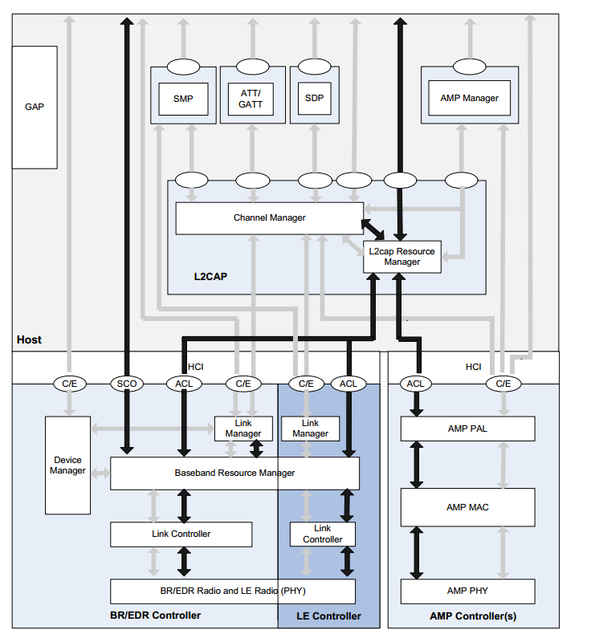

先来看看蓝牙协议的框架

The channel manager is responsible for creating, managing and closing
L2CAP channels for the transport of service protocols and application data
streams. The channel manager uses the L2CAP protocol to interact with a
channel manager on a remote (peer) device to create these L2CAP channels
and connect their endpoints to the appropriate entities. The channel manager
interacts with its local link manager or an AMP PAL to create new logical links
(if necessary) and to configure these links to provide the required quality of service for the type of data being transported.
通道管理负责创建、管理关闭L2CAP通道的服务协议传输和应用数据流。通道管理使用L2CAP协议去创建L2CAP通道和连接他们的终结点。通道管理器的交互是通过它的逻辑管理器
The L2CAP resource manager block is responsible for managing the ordering
of submission of PDU fragments to the baseband and some relative scheduling
between channels to ensure that L2CAP channels with QoS commitments are
not denied access to the physical channel due to Controller resource exhaustion. This is required because the architectural model does not assume that a
Controller has limitless buffering, or that the HCI is a pipe of infinite bandwidth.
L2CAP Resource Managers may also carry out traffic conformance policing to
ensure that applications are submitting L2CAP SDUs within the bounds of their
negotiated QoS settings. The general Bluetooth data transport model assumes
well-behaved applications, and does not define how an implementation is
expected to deal with this problem.
L2CAP资源管理块负责管理PDU碎片提交给基带的时序和一些通道之间相关的调度，去确保L2CAP通道不被禁止，从而导致Controller资源枯竭。
The Security Manager Protocol (SMP) is the peer-to-peer protocol used to generate encryption keys and identity keys. The protocol operates over a dedicated fixed L2CAP channel. The SMP block also manages storage of the
encryption keys and identity keys and is responsible for generating random
addresses and resolving random addresses to known device identities. The
SMP block interfaces directly with the controller to provide stored keys used for
encryption and authentication during the encryption or pairing procedures.
This block is only used in LE systems. Similar functionality in the BR/EDR system is contained in the Link Manager block in the Controller. SMP functionality
安全管理协议（SMP）是一个使用加密钥匙和识别钥匙的点对点协议，这个协议是运行在一个专门的固定的L2CAP通道上。SMP块也管理保存加密码和识别码，负责生成随机地址和解析随机地址去设别设备的身份。SMP直接为controller提供保存秘钥用于加密流程和配对流程中的加密和认证。SMP只用于LE。
2.1.1.4 Attribute Protocol The Attribute Protocol (ATT) block implements the peer-to-peer protocol between an attribute server and an attribute client. The ATT client communicates with an ATT server on a remote device over a dedicated fixed L2CAP
channel. The ATT client sends commands, requests, and confirmations to the
ATT server. The ATT server sends responses, notifications and indications to
the client.
These ATT client commands and requests provide a means to read
and write values of attributes on a peer device with an ATT server.
属性协议（ATT）用于属性服务器和属性客服端的点对点协议。ATT客服端与ATT服务端的远程通信是通过L2CAP上的固定专用通道的。ATT客服端发送指令(commands)、请求(requests)和确认(confirmations)给ATT服务端。ATT服务器发送回复（responses），通知（notifications） 和指示（indications）给ATT客服端。ATT客服端的指令（commands）和请求（requests）提供了一个方法去读和写值给配对的ATT服务端。
The Generic Attribute Profile (GATT) block represents the functionality of the
attribute server and, optionally, the attribute client. The profile describes the
hierarchy of services, characteristics and attributes used in the attribute server.
The block provides interfaces for discovering, reading, writing and indicating of
service characteristics and attributes. GATT is used on LE devices for LE profile service discovery
通用属性配置代表了属性服务端和属性客服端的功能。配置文件描述了ATT服务器的服务、特性、属性的层次。GATT提供了服务特性和属性的发现、读、写、指示的接口。GATT用于LE设备的的LE配置文件服务的发现。
通用访问配置文件（GAP）块表示所有蓝牙设备共有的基本功能，例如所使用的模式和访问过程传输，协议和应用程序配置文件。 GAP服务包括设备发现，连接模式，安全性，身份验证，关联模型和服务发现。
蓝牙核心系统由一个host和一个首级控制器和零个或多个次级控制器组成。
The link manager is responsible for the creation, modification and release of
logical links (and, if required, their associated logical transports), as well as the
update of parameters related to physical links between devices. The link manager achieves this by communicating with the link manager in remote Bluetooth devices using the Link Management Protocol (LMP) in BR/EDR and the
Link Layer Protocol (LL) in LE.
The LM or LL protocol allows the creation of new logical links and logical transports between devices when required, as well as the general control of link and
transport attributes such as the enabling of encryption on the logical transport,
the adapting of transmit power in BR/EDR on the physical link, or the adjustment of QoS settings in BR/EDR for a logical link
链路管理器负责创建、修改、发布逻辑链路，同样也更新不同设备之间的物理链路参数。这个链路管理器通过链路层协议（LL）实现了不同设备之间的通信。